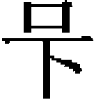

河渠志一
至元十七年，世祖以學士都實爲招討使，佩虎符，尋河源於萬里之外。都實既受命，道河州，至州東六十里之寧河驛。驛西南有山，曰殺馬關，行一日至巔。西上愈高，四閲月始抵河源。是冬，還報，並圖其城傳位置以聞。其後，翰林學士潘昂霄從都實之弟曰闊闊出者，得其説，撰爲《河源志》。臨川朱思本又從八里吉思家，得帝師所藏梵字書，而以華文譯之，與昂霄所志，互有詳略。舊史採《河源志》，而以思本之説注其下，參差不一。
按河源在吐蕃朵甘思西鄙，有泉百餘泓，沮洳散涣，弗可逼視，方可七八十里，履高山下瞰，燦若列星，故名火敦淖爾。「火敦」，譯言星宿；「淖爾」，譯言海子也。思本曰：「河源在中州西南，直四川馬湖蠻部之正西三千餘里，雲南麗江宣撫司之西北千五百餘里，帝師撒思如地之西南二千餘里。水從地湧出如井。其井百餘，東北流百餘里，匯爲大澤，曰火敦淖爾。」羣流奔輳，近五七里，匯二巨澤，名阿剌淖爾。自西而東，連屬吞噬。行一日，迤邐東匯成川，號赤賓河。又二三日，有水西南來，名亦里出水，與赤賓河合。又三四日，有水南來，名忽闌水。又有水東南來，名耶里朮水。合流入赤賓河，其流寖大，始名黄河，然水猶清。思本曰：「忽闌河源，出自南山，其地大山峻嶺，綿亘千里，水流五百餘里，注耶里出河。耶里出河源，亦出自南山，西北流五百餘里，始與黄河合。」又一二日，歧爲八九股，名耶孫斡倫，譯言九渡。通廣五七里，可度馬。又四五日，水渾濁，土人抱革囊，騎過之。自是兩山夾束，廣可一里、二里或半里，其深叵測。朵甘思東北有大雪山，最高，番語騰乞里塔，即崑崙，山腹至頂皆雪，冬夏不消。自九渡水至崑崙，行二十日。思本曰：「自渾水東北流二百餘里，與懷里火圖河合。懷里火圖河源自南山，水正北偏西流八百餘里，與黄河合。又東北流百餘里，過郎麻哈地。又正北流百餘里，乃折而西北流二百餘里，又折而正北流百餘里，又折而東流，過崑崙山下。番名亦耳麻不剌山。其山高峻非常，山麓綿亘五百餘里，河隨山足東流，過撒思加、闊即、闊提地。」
河行雪山南半日，又四五日，至地名闊即及闊提，二地相屬。又三日，地名哈剌别里赤爾，四達之衝也，多寇盜，有官兵鎮之。近北二日，河水過之。思本曰：「河過闊提，與亦西八思今河合。亦西八思今河源自鐵豹嶺之北，正北流凡五百餘里，與黄河合。」雪山以西，人鮮少，吐番部落多處山南。山不穹峻，水亦散漫，獸有髦牛，野馬、狼、狍、羱羊之類。其東，山益高，地益漸下，岸狹處，狐可越而過之。行五六日，有水西南來，名納鄰哈剌河，譯言細黄河也。思本曰：「哈剌河自白狗嶺之北，水西北流五百餘里，與黄河合。」又兩日，有水南來，名乞里馬出河。二水合流入河。思本曰：「自哈剌河與黄河合，正北流二百餘里，過阿以伯站，折而西北流，經崑崙之北二百餘里，與乞里馬出河合。乞里馬出河源自威、茂州之西北，岷山之北，水北流，即古當州境，正北流四百餘里，折而西北流，又五百餘里，與黄河合。」
河水北行，轉西流，過雪山北，一向東北流，約行半月，至貴德州，地名必赤里，始有州治官府。州隸吐蕃等處宣慰司，司治河州。又四五日，至積石州，即後世所誤認之小積石山，非《禹貢》導河之積石。五日，至河州安鄉關。一日，至打羅坑。東北行一日，洮河水南來入河。思本曰：「自乞里馬出河與黄河合，又西北流，與鵬贊河合。折而西北流三百餘里，又折而東北流，過西寧州、貴德州、馬嶺，凡八百餘里，與邈水合。又東北流，過土橋站古積石州來羌城、廓州構米站界都城，凡五百餘里，過河州與野龐河合。又東北流百餘里，過踏白城銀川站，與湟水、浩亹河合。又東北流百餘里，與洮河合。以上皆番地。」
又一日，至蘭州，過北卜渡，至鳴沙河，過應吉里州。正東行，至寧夏府南。東行，即東勝州，隸大同路。自發源至漢地，南北澗溪，細流旁貫，莫知紀極。山皆石，至小積石方林木暢茂。世言河九折，彼地有二折，乞里馬出河一折也，貴德州二折也，過此始入小積石。思本曰：「自是逕蘭州，又東北流，至寧夏府。出塞過游牧地，凡八百餘里。過豐州西受降城，折而正東流，過游牧地古天德軍中受降城、東受降城，凡七百餘里。折而正南流，過大同路雲内州、東勝州，與黑河合。又正南流，過保德州、葭州及興州境，又過臨州，凡千餘里，與保德州乞那河合。又南流三百里，與延安河合。又南流三百里，與汾河合。又南流二百里，過河中府，遇潼關與太華大山綿亘，水勢不可復南，乃折而東流。大概河源東北流，所歷皆西番地，至蘭州凡四千五百餘里，始入中國。又東北流過沙漠地，凡二千五百餘里，始入河東境内。又南流至河中，凡千八百餘里。通計九千餘里。」蓋舊史所述如此。
至我大清乾隆間平西域，始知葱嶺爲河之初源，都實所訪星宿海乃重出之源耳。然河爲中國患千有餘年，世祖欲窮其源委，以施疏導之方，勤民之至意也。今撮其大要，載於篇首，以備一代之掌故云。
河防
自河徙而南，衝決之患，至元而日甚。其治河之法，凡物料工程輪運，以至疊埽修堤之事，皆沿襲宋、金舊法，承用百年，著爲條格者也。
河防之令九：
一，每歲選舊部官一員，沿河上下，兼行户、工部事，督令分治都水監及京府州縣守漲，從實規措，修固堤岸。如所行事務，有可久爲例者，即關移本部，仍候安流，就便檢覆。次年春，工物料訖，即行還職。
一，分治都水監及勾當河防事務，並馳驛。
一，州縣提舉管勾河防官，每六月一日至八月終，各輪一員守漲，九月一日還職。
一，沿河兼帶河防知縣官，雖非漲月，亦輪上提控。一應沿河州縣，若規措有方，能禦大患，及守護不謹，以致堤岸疏虞者，具以奏聞。
一，河橋埽兵，遇天壽聖節及元日、清明、冬至、立春俱給假一日；祖父母、父母吉凶二事，並自身婚娶，俱給假三日；妻子吉凶二事，給假二日；其河水平安月分，每月朔給假一日。若水勢危險，不用此令。
一，沿河州府遇河防危險之際，若兵力不足，勸率水手人户協濟救護，至有幹濟，或難迭辦，須當時暫差夫役者，州府提控官與都水監及巡河官同爲計度，移下司縣，以遠近量數差遣。
一，河防軍疾疫須醫治者，都水監移文近京州縣，約取所須藥物，並從官給。
一，河埽堤岸遇霖雨水漲暴變時，分都水司與都巡河官往來提控，官兵多方用心固護，無致爲害，仍每月具河埽平安申覆尚書省工部呈閲。
一，除滹沱、漳、沁等河有埽兵守護外，其餘大川巨浸如有卧著衝刷危險等事，並仰所管官事約量差夫作急救護。其蘆溝河行流去處，每遇汎漲，當該縣官與崇福埽官司一同協濟防護，差官一員係監勾之職或提控巡檢。
每歲守漲河防之制六：
一，開河。宜於上流相視地形，審度水性，測望斜高，於冬月記料，至次年春興役開挑，須漲月前終畢。待漲水發，隨勢去隔，堰水入新河，又須審勢疏導。假如河勢丁字正撞堤岸，剪灘截觜，撩淺開挑，費功不便，但可解目前之急，亦有久而成河者。如相地形，取直開挑，先須鈐

謂上下平岸口也。分水勢，以解堤岸之危。若欲全奪大勢，更於對岸拋下木石修刺，於刺影水勢漸以木石鈐固河口，因復填實，損而復修，至堅固不摧塌，則新河迤邐暢流，舊河自然淤實。一，閉河。先行檢視舊河岸口，兩岸植立表杆，次繫影水浮橋，使役夫得於兩岸通過。於上口下撒星樁，拋下木石鎮壓狂瀾，然後兩岸各進草紝三道、土紝兩道，又於中心拖下席袋土包。若兩岸進紝，至近合龍門時，得用手持土袋土包拋下，兼鳴鑼鼓以敵河勢。既閉後，於紝前捲攔頭壓埽於紝上，修壓口堤。若紝眼水出，再以膠土填塞牢固，仍設邊檢以防滲漏。
一，定平。先正四方位置，於四角各立一表，當心安置水平。其制長二尺四寸，廣二寸五分，高二寸。先立樁於下，高四尺，纂在内，樁上横坐水平，兩頭各開小池，方一寸七分，深一寸三分，注水於中以取平。或中心又開池者，方深同，身内開槽子，廣深各五分，令水通過兩頭池子内，各用水浮子一枚，方一寸五分，高一寸二分，刻上頭，側薄祇厚一分，浮於池内，望兩頭水浮之首，參直遥對立表處，於表身畫記，即知地形高下。
一，修砌石岸。先開掘檻子嵌坑，若用闊二尺，深二丈，開與地平。順河先鋪綫道板一，次立簽樁八，各長二丈，内打釘五尺入地，外有一丈五尺。於簽樁上，安跨塌木板六，每留三板，每板鑿二孔中間。撒子木六，於撒子木上匀鋪稈草束。先用整石修砌，修及一丈，後用荒石再砌一丈，一例高五尺。第二層，除就簽樁外，依前鋪塌木板、撒子木、稈草，再用石段修砌，高五尺。第三層，亦如之，高一丈。功就，通高二丈。
一，捲埽。其制亦昉於竹楗石菑，今則布薪芻以捲之，環竹絙以固之，絆木以係之，掛石以墜之，舉其一二以稱之，則日音混。既下，又填以薪芻，謂之盤簟。兩之交，或不相接，則包以網子索，塞以稈草，謂之孔塞盤簟。孔塞之費，有過於埽者，蓋隨水去者太半故也。其最下者，謂之撲厓草，又謂之入水埽。之最上者，謂之争高埽。河勢向著，恐難固護，先於堤下掘坑捲埽以備之，謂之捲埽。疊二三四五而捲者，以沙壤疏惡，近水即潰，必借埽力以捍之也。下既朽，則水刷而去，上壓之，謂之實墊。又捲新埽以壓於上，俟定而後止。凡埽去水近者，謂之向著；去水遠者，謂之退背。水入埽下者，謂之緊刷。若暴水漲溢，下埽既去，上埽動摇，謂之埽喘。
一，築城。此非河事，以水圮近河，州縣亦或用之。城高四十尺，則加厚二十尺。其上斜收，減高之半。若高增一尺，則其下亦加厚一尺，上收亦減其半。若高減，則亦減之。開地深五尺，其廣視城之厚。每身一十五步，栽永定柱一，長視城之高，徑一尺至一尺二寸。夜叉柱各二。每築高二尺，横用經木一。甕城至馬面之類，准此。他如工程之限，輸運之直，與夫合用物料之多寡，皆綜覈詳密，品式粲然，爲都水司奉行之條例云。
世祖中統以前，河患無可考。至元九年七月，衛輝路新鄉縣河決北岸五十餘步。八月，北岸又決八十二步，去廣盈倉僅三十步。遣都水監丞馬良弼偕本路官相視，僉丁夫修築之。二十三年十月，河決開封、祥符、陳留、杞、太原、通許、鄢陵、扶溝、洧川、尉氏、陽武、延津、中牟、原武、睦州十五處，僉南京民夫二十萬四千三百二十三人分築堤防。二十五年正月，河決襄邑，又決太康、通許、杞三縣，陳、潁二州皆水，命本道宣慰司督修堤之役。二十九年三月，敕都水監，二十八年，丞相完澤奏置都水監於京師，歲以官一、令史二、奏差二、壕寨官二，分監於汴治決河。分視黄河河堤堰。
元貞二年九月，河決杞、封邱、祥符、寧陵、襄邑五縣。大德元年七月，河決杞縣蒲口，遣尚書耶懷、御史劉賡與廉訪使尚文相視，籌長久之計。文上言：「長河萬里，湍猛東注，盟津以下，地平土疏，蕩徙不常，失禹故道，流患中土。治得其當，則力省而患遲，失之則功費而患速。今陳留抵東西百有餘里，南岸故河口十一，已塞者二，自涸者六，通水者三，岸高於水六七尺或四五尺。北岸高於水，僅三四尺，或高下與水等。大較南高於北，約八九尺，堤安得不決，水安得不北也。蒲口今決千有餘步，迅快東行，得河舊瀆，行二百里，至歸德，復會正流。若强加湮遏，上決下潰，終究無成。揆之今日河北郡縣順水之性，遠築長堤以禦汎濫。歸德、徐、邳聽民避衝決，圖所安，量給淤田，俾爲永業。他決視此，即救患之良策也。蒲口不塞便。」議上，山東長吏争言，若不塞蒲口，河北良田必盡化魚鱉之區。廷議從之，命河南行省官董其役，凡修七隄二十有五處，總三萬九千九十二步，用葦束四十萬四千，徑尺樁二萬四千七百二十，役民夫七千九百餘人。明年，蒲口復決。自是，修築之役無歲無之。
至大二年七月，河決封邱縣。三年十一月，河北河南道廉訪司言：
黄河決溢，千里蒙害。浸城郭，漂室廬，壞禾稼，百姓已罹其毒，然後訪求修治之法。而且衆議紛紜，互陳利害，當事者疑惑不決，必須上請。比至議定，其害滋大，所謂不預已然之弊。大抵黄河伏槽之時，水勢似緩，觀之不足爲害。一遇霖潦，湍浪迅猛，自孟津以東，土性疏薄，崩潰決溢，可翹足而待。近歲潁、亳之民，幸河北徙，有司不能遠慮，失於規畫，使陂濼盡爲陸地，東至杞縣三汊口，播河爲三。官吏建言，相次湮塞南北二汊，使三河之水合而爲一。下流既不通暢，自然上溢。由是觀之，是自奪分泄之利也。故上下潰決，爲害日甚。今水勢趨下，有復入鉅野、梁山之意。苟不爲遠計，不出數年，曹、濮、濟、鄆，蒙害必矣。今之所謂治水者，議論雖多，並無良策。水監之官，既非精選，知河之利害者，百無一二。雖每年累驛而至，名爲巡河，徒應故事。問地形之高下，則懵不知；訪水勢之利病，則非所習。乃或妄興事端，勞民動衆，阻違水性，翻爲後患。爲今之計，莫若於汴梁置都水分監，妙選廉幹、深知水患之人，專任其事。可疏者疏之，可增者增之，可防者防之。職掌既專，則事功可立。較之河已決溢，民已被害，然後鹵莽從事以勞民者，不可同日而語矣。
中書省下其議於都水監。先是，省臣奏升都水監爲正三品，添設二員，鑄分監印，巡視御河，就令提點黄河之事。至是，本監議：「爲御河添官鑄印，兼提點黄河，若分監在彼，則有妨御河公事。况黄河已有拘該官司正官提調，莫若使分監者以十月往，與各處官司巡視缺壞，會計工程，俟年終分監新官至，則交割代還，庶不相誤。」
工部言：「大德九年，黄河決徙，逼近汴梁，幾至浸没。本處官吏權宜開薰盆口，分入巴河，以殺其勢，遂使正河水緩，併趨支流。緣巴河舊隘，不足吞伏，明年急遣蕭都水等閉塞，而其勢愈大，卒無成功。致連年爲害，南至歸德，北至濟寧，盡患淪胥。欲爲經久之計，非用通知古今水利之人專任其事，終無補益。河南憲司所言詳悉，都水監止援舊例議擬未合。如量設專官，精選廉幹、深知地形水勢者，任以河防之職，往來巡視，以時疏塞，庶可除異日之患。」省議乃令都水分監專治河防，任滿交代云。
延祐元年八月，河南行省言：「黄河涸出之地，水泊汙地，多爲勢家所據，忽遇泛溢，水無所歸。由此觀之，非河侵人，人自侵水。擬差知水利都水監官偕行廉訪司相視，可以疏闢堤障，未至泛溢，先加修治，用力少而成功多。又汴梁路睢州諸處，決口數十，内開封縣小黄村計會月堤一道，所擬不一。宜委行省官與本道憲司、都水分監官及州縣正官，親歷按驗，從長講議。」
由是遣太常丞郭奉政、前都水監丞邊丞務、都水監卿朵兒只、河南行省石右丞、本道廉訪副使站木赤、汴梁路判官張承恩，上至河陰，下至陳州，與拘該州縣官沿河相視。開封縣小黄河口，測量比舊減六尺，陳留，通許、太康舊有蒲葦之地，後以塞西河、塔河諸口，以便種植，故他處連年潰決。
公議：「治水之道，惟當順其性之自然。黄河遷徙不常，每歲泛溢，兩岸時有衝決。强爲閉塞，已及農時。科樁僉，發丁夫，動至數萬，所費不可勝紀，民不堪命。蓋自治之法，惟宜順水疏泄。今相視上抵河陰，下抵歸德，夏水盛漲，甚於常年，以小黄河口分泄之故，並無衝決，此其明驗也。若將小黄村河口堵閉，必移患於鄰封。決上流南岸，則汴梁被害。決下流北岸，則山東可憂。事難兩全，當遺小就大。詳視陳州，最爲低窪被水之地。今歲麥禾不收，民饑特甚，請免陳州差税，賑其饑民。陳留、通許、太康縣被災之家，依例取勘賑恤。其小黄村河口仍舊通流，築月堤及障水堤以資抵扞。别難擬議。」中書省韙之，依議施行。
至五年正月，河北河南道廉訪副使奥屯言：「近年河決杞縣小黄村口，滔滔南流，莫能禦遏，陳、潁瀕河膏腴之地浸没大半，百姓流亡。今水迫汴城，遠無數里，倘值霖雨水溢，倉卒何以爲計？方今農隙，宜爲講究，使水歸故道，達於江、淮，不惟陳、潁之民得遂其生，亦可除汴梁異日之患。」
於是大司農下都水監移文分監修治，自六年十一月十一日興工，至七年三月九日工畢，北至槐疙疸兩舊堤，南至窰務汴堤，通長二十里二百四十三步。創修護城堤一道，長七千四百四十三步。堤下廣十六步，上廣四步，高一丈，六尺爲一工。計工二十五萬三千六百八十，用夫八千四百五十三。除風雨妨工，三十日畢。内流水河溝，南北闊二十步，水深五尺。修堤闊二十四步，上廣八步，高一丈五尺，積十二萬尺，取土稍遠，四十尺爲一工，計三萬工，用夫萬人。每步用大樁二，計四十，各長一丈三尺，徑四寸。每步草束千，計二萬束，簽樁四，計八十樁，各長八尺，徑三寸。大船二，梯钁繩索備焉。
是年七月，滎澤縣塔海莊河決，未幾，開封縣蘇村及七里寺復決二口。本省平章政事站馬赤親率本路官及都水分監併工修築。至治元年正月興工，條堤岸四十六處，計工一百二十五萬六千四百九十四，用夫三萬一千四百一十三。八年，河決原武縣，浸灌數屬，其工役案牘無徵，莫得而詳焉。
泰定二年，御史姚煒以河屢決，請立行都水監於汴梁，仍令沿河州縣知河防事。從之。是年，睢州河決。三年，鄭州陽武縣又決，漂民房一萬六千餘家。五年，蘭陽縣河又決。
至順元年六月，曹州濟陰縣魏家道口河決。先是，堤將潰，濟陰縣防河官與縣尹郝承務差募民夫創修護水月堤，又以水勢大，復築月堤於北。功未竟，水忽泛溢，新舊三堤俱決。明日，外堤復壞，湍流迅猛，有蛇出没於中，所上樁工，一埽無遺。缺口東西五百餘步，深二丈餘。外堤缺口，東西四百餘步，又磨子口護水堤，低薄不足禦水，東西長一千五百步。乃先築磨子口，七月十六日興工，二十八日工畢。郝承務言：「魏家道口塼堌等村缺口，累下樁土，衝決不存，堤周回皆泥淖，人不可居，又無取土之處。且沛郡安樂等堡，去歲旱災，今復水澇，民皆缺食，難於差僉。其不經水村堡，先已徧差補築黄家橋、磨子口諸處堤堰，似難重役。請俟秋涼水退，僉夫修理，庶蘇民力。計衝壞新舊堤七處，共一萬二千二百十六步，下廣十二步，上廣十四步，高一丈二尺。計用夫六千三百人，樁九百九十，葦箔一千三百二十，草束一萬六千五。六十尺爲一工，無風雨妨工，度五十日可畢。」
郝承務又言：「九月三日興工，連日風雨，辛馬頭、孫家道口堤又壞，計工役倍於元數，添差二千人同築。二十六日，元與武成、定陶二縣分築魏家道口八百二十步工竣。其辛馬頭、孫家道口之缺口，南北闊一百四十步，内水地五十步，深者二丈，淺者亦不下八九尺，補築七日工竣。又創築月堤一道，斜長一千六百二十七步，内武城、定陶分築一百五十步，實築一千四百七十七步。惟堌頭、魏家道口外堤未築，以冬寒土凍，俟來春補築焉。」
是年，遣太禧宗禋院都事蓋苗行視河道。苗還言：「河口淤塞，今不治，異日必爲中原大患。」都水監難之，事遂寢。不及十五年，而白茅堤之口決。
至正四年正月，河決曹州，雇民夫一萬五千八百人築之。五月，大霖雨，平地水深二丈，河暴溢，決白茅堤，曹、濮、濟、衮皆水。十月，議築黄河堤堰。六年，以河決，立河南、山東等處行都水監，專治河防。九年三月，河北決。五月，白茅河東注沛縣，遂成巨浸。是年冬，帝命集羣臣廷議，言人人殊。惟監察御史余闕言：「禹河自大伾而下，釃爲二渠，皆東北流。自周定王時，河始南徙。訖於漢，而禹之故道始失。自瓠子再決，而其流爲屯氏諸河。其後河入千乘，偶合於禹所治河，由是而訖東都，至唐，河不爲患者千數百年。趙宋時，河又南決。至於南渡，乃由彭城合汴、泗東南以入淮，而漢之故道又失。嘗考中國之地，西南高而東北下，故水至中國而入海者，一皆趨於東北。古河自龍門即穿西山，踵趾而入大陸，地之最下者也。河之行於冀州，北方也，數千年而徙千乘。自漢而後，千數百年而徙彭城。然南方之地，本高於北，故河之南徙也難，而其北徙也易。自宋南渡至今，殆二百年，而河旋北，乃地勢使然，非關人力也。比者河北破金堤，逾豐沛，曹、鄆諸郡大受其害，天子哀民之墊溺，乃疏柳河，欲引之南，工不就。今諸臣集議，多主濬河故道，復引河以南入彭城，築堤起曹南訖嘉祥，東西三百里，以障河之北流，則漸可以導之使南。嗟乎！諺有之曰：『不習爲吏，眂已成事。』今所謂南流故道者，非河之故道也。使反於大禹北流之故道，由漢之千乘以入海，則國家將無水患千餘年，如東漢與唐之時，而又何必障而排之使南乎？今廟堂之議，非以南爲壑也，其慮以爲河之北，則會通之漕廢。不知河即北，而會通之漕不廢。何也？漕以汶，而不以河也。河北流，則汶自彭城以下必微，微則吾有制而治之，亦可以行舟以漕粟，所謂『浮於汶，達於河』者是也。闕特欲防鉅野，而使河不妄行，俟河復千乘故道，然後復相水之宜而修治之。此千古之明鑒，非一人之私言也。」
十年四月，以軍士五百人修白茅河堤。十二月，命大司農秃魯、工部尚書成遵行視決河，議其疏塞之法以聞。十一年春，遵等自濟寧、曹、濮、大名行數千里，掘井以量地形之高下，測岸以究水勢之深淺，以爲河之故道不可復，其議有八。時右丞相脱脱復相，鋭於任事。都漕運使賈魯以治河二策進：其一，修築北堤，以制横潰，則用工省；其一，疏塞並舉，挽河復故道，其功數倍。脱脱韙魯後策。及遵與秃魯至，力陳不可。脱脱不聽，以其事屬魯。遷魯爲工部尚書，總治河防使。發汴梁、大名十三路民夫十五萬，廬州等處十八翼軍二萬，自黄陵岡南達白茅，放於黄堌、哈只等口，又自黄陵西至楊青村合於故道，凡二百八十里百五十四步有奇。命中書右丞玉樞虎兒哈等率衛軍以鎮之。自四月興工，至十一月，水土工畢，諸埽諸堤成，河復故道，南匯於淮，又東入於海。帝遣使者報祭河伯，召魯還京師，論功超拜榮禄大夫、集賢大學士，賜脱脱世襲達剌罕，命翰林學士承旨歐陽元撰《河平碑》，以旌勞績。元治河三大役：曰蒲口，曰小黄村，曰白茅堤。當時名臣多謂宜順水勢，勿堙塞，其言率迂不可用。脱脱黜成遵，從賈魯，挽河復故道，尤爲不世之功。歐陽元作《至正河防記》，載其施功次第詳矣。用附著左方，俾治河者有考焉。
至正河防記
治河一也，有疏，有濬，有塞，三者異焉。釃河之流，因而導之，謂之疏。去河之淤，因而深之，謂之濬。抑河之暴［一］，因而扼之，謂之塞。疏濬之别，有四：曰生地，曰故道，曰河身，曰減水。河身地有直有紆，因直而鑿之，可就故道。故道有高有卑，高者平之以趨，卑高相就，則高不壅，卑不瀦，慮夫壅生潰，瀦生堙也。河身者，水雖通行，身有廣狹。狹難受水，水溢悍，故狹者，以計闢之。廣難爲岸，岸善崩，故廣者以計禦之。減水河者，水放曠，則以制其狂；水墮突，則以殺其怒。
治堤一也，有創築、修築、補築之名，有刺水堤，有截河堤，有護岸堤，有縷水堤，有石船堤。
治埽一也，有岸埽、水埽，有龍尾、欄頭、馬頭等埽。其爲埽臺及推卷、牽制、薶掛之法，有用土、用石、用鐵、用草、用木、用 、用絙之方。
、用絙之方。
塞河一也，有缺口，有豁口，有龍口。缺口者，已成川。豁口者，舊常爲水所豁，水退則口下於堤，水漲則溢出於口。龍口者，水之所會，自新河入故道之潨也。
此外不能悉書，因其用功之次第而就述於其下焉。
其濬故道，深廣不等，通長二百八十里百五十四步而强。功始自白茅，長百八十二里。繼自黄陵岡至南白茅，生地十里。口初受，廣百八十步，深二丈有二尺，已下停廣百步，高下不等，相折深二丈及泉。曰停、曰折者，用古算法，因此推彼，知其勢之低昂，相準折而取匀停也。南白茅至劉莊村接入故道十里，通折墾廣八十步，深九尺。劉莊至專固百有二里二百八十步，通折廣六十步，深五尺。專固至黄固，墾生地八里，面廣百步，底廣九十步，高下相折，深丈有五尺。黄固至哈只口，長五十一里八十步，相折停廣墾六十步。深五尺。乃濬凹里減水河，通長九十八里百五十四步。凹里村缺河口生地，長三里四十步，面廣六十步，底廣四十步，深一丈四尺。自凹里生地以下舊河身至張贊店，長八十二里五十四步。上三十六里，墾廣二十步，深五尺。中三十五里，墾廣二十八步，深五尺。下十里二百四十步，墾廣二十六步，深五尺。張贊店至楊青村，接入故道，墾生地十有三里六十步，面廣六十步，底廣四十步，深一丈四尺。
其塞專固缺口，修堤三重，並補築凹里減水河南岸豁口，通長二十里三百十有七步。其創築河口前第一重西堤，南北長三百三十步，面廣二十五步，底廣三十三步，樹植樁橛，實以土牛、草葦、雜梢相兼，高丈有三尺。堤前置龍尾大埽。言龍尾者，伐大樹連梢繫之堤旁，隨水上下，以破嚙岸浪者也。築第二重正堤，並補兩端舊堤，通長十有一里三百步。缺口正堤長四里。兩堤相接舊堤，置樁堵閉河身，長百四十五步，用土牛、稍土、草葦相兼修築。底廣三十步，修高二丈。其岸上土工修築者，長三里二百十有五步有奇，高廣不等，通高一丈五尺。補築舊堤者，長七里三百步，表裏倍薄七步，增卑六尺，計高一丈。築第三重東後堤，並接修舊堤，高廣不等，通長八里。補築凹里減水河南岸豁口四處，置樁木、草土相兼，長四十七步。
於是塞黄陵全河，水中及岸上修堤，長三十六里百三十六步。其修大堤刺水者二，長十有四里七十步。其西復作大堤剌水者一，長十有六里百三十步。内創築岸上土堤，西北起李八宅西堤，東南至舊河岸，長十里百五十步，顛廣四步，趾廣三之，高丈有五尺。仍築舊河岸至入水堤，長四百三十步，趾廣三十步，顛殺其六之一，接修入水。
兩岸埽堤並行。作西埽者，夏人水工，徵自靈武。作東埽者，漢人水工，徵自近畿。其法以竹絡實以小石，每埽不等，以蒲葦線腰索徑寸許者從鋪，廣可一二十步，長可二三十步。又以曳埽索綯徑三寸或四寸，長二百餘尺者衡鋪之相間。復以竹葦麻檾大繂，長三百尺者爲管心索，就繫綿腰索之端於其上，以草數千束，多至萬餘，匀布厚鋪於綿腰索之上，橐而納之。丁夫數千，以足踏實。推卷稍高，即以水工二人立其上，而號於衆，衆聲力舉，用小大推梯，推卷成埽，高下長短不等。大者高二丈，小者不下丈餘。又用大索，或互爲腰索，轉致河濱。選健丁操管心索，順掃臺立踏，或掛之臺中鐵貓大橛之上，以漸縋之下水。埽後掘地爲渠，陷管心索渠中，以散草厚覆，築之以土，其上覆以土牛、雜草、小埽梢土，多寡厚薄，先後隨宜。修疊爲埽臺，務使牽制土下，縝密堅壯，互爲犄角，埽不動摇。日力不足，火以繼之。積累既畢，復施前法，卷埽以厭先下之掃，量淺深，制埽厚薄，疊之多至四埽而止。兩埽之間，置竹絡，高二丈或三丈，圍四丈五尺，實以小石、土牛。既滿，繫以竹纜。其兩旁並埽，密下大樁，就以竹絡大竹腰索繫於樁上。東西兩埽及其中竹絡之上，以草土等築爲埽臺，約長五十步或百步。再下埽，即以竹索或麻索長八百尺或五百尺者一二，雜廁其餘管心索之間。俟埽入水之後，其餘管心索如前薶掛，隨以管心長索遠置五七十步之外，或鐵猫，或大樁，曳而繫之，通管束累日所下之埽，再以草土等物通修成堤。又以龍尾大埽，密掛於護堤大樁，分析水勢。其堤長二百七十步，北廣四十二步，中廣五十五步，南廣四十二步。自顛至趾，通高三丈八尺。
其截河大堤，高廣不等，長十有九里百七十七步。其在黄陵北岸者，長十里四十一步。築岸上土堤，西北起東西故堤，東南至河口，長七里九十七步，顛廣六步，趾倍之二强二步，高丈有五尺。接修入水，施土牛，小埽梢草雜土，多少厚薄，隨宜修疊。及下竹絡，安大樁，繫龍尾埽，如前兩堤法。唯修疊埽臺，增用白闌小石，並埽上及前洊修埽堤一，長百餘步，直抵龍口。稍北，欄頭三埽並行，大堤廣與刺水二堤不同。通前列四埽，間以竹絡，成一大堤，長二百八十步，北廣百一十步，其顛至水面高丈有五尺，水面至澤腹高二丈五尺，通高三丈五尺。中流廣八十步，其顛至水面高丈有五尺，水面至澤腹高五丈五尺，通高七丈。並創築縷水横堤一，東起北截河大堤，西抵西刺水大堤，又一堤，東起中刺水大堤，西抵西刺水大堤，又一堤，東起中刺水大堤，西抵西刺水大堤。通長二里四十二步，亦顛廣四步，趾三之，高丈有二尺。修黄陵南岸，長九里六十步。内創岸土堤，東北起新補白茅故堤，西南至舊河口，高廣不等，長八里二百五十步。
乃入水作石船大堤。蓋由是秋八月二十九日乙巳，道故河流，先所修北岸西中刺水及截河三堤猶短，約水尚少，力未足恃。決河勢大，南北廣四百餘步，中流深三丈餘，益以秋漲，水多故河十之八，兩河争流，近故河口，水刷岸北行，洄漩湍急，難以下埽。且埽行或遲。恐水盡湧入決河，因淤故河，前功隨墮。魯乃精思入故河之方，以九月七日癸丑，逆流排大船二十七艘，前後連以大桅或長樁，用大麻索、竹絙絞縛，綴爲方舟。又用大麻索、竹絙，用船身繳繞上下，令牢不可破，乃以鐵猫於上流硾之水中。又以竹絙絶長七八百尺者，繫兩岸大橛上，每絙或硾二舟或三舟，使不得下，船腹略鋪散草，滿貯小石，以合子板釘合之。復以埽密布合子板上，或二重或三重，以大麻索縛之急。復縛横木三道於頭桅，皆以索維之，用竹編笆，夾以草石，立之桅前，約長丈餘，名曰水簾桅。復以木榰拄，使簾不偃仆。然後選水工便捷者，每船各二人，執斧鑿，立船首尾，岸上搥鼓爲號，鼓鳴，一時齊鑿，須臾舟穴，水入，舟沉，遏決河。水怒溢，故河水暴增。即重樹水簾，令後復布小掃、土牛、白闌、長稍，雜以土草等物，隨以填垛。繼之以石船下詣實地，出水基趾漸高，復卷大埽以壓之。前船勢略定，尋用前法，沈餘船，以竟後功。昏曉百刻，役夫分番甚勞，無少間斷。船堤之後，草埽三道並舉，中置竹絡盛石，並埽置樁，繫纜四埽及絡，一如修北截水堤之法。第以中流水深數丈，用物之多，施工之大，倍他堤。距北岸纔四五十步，勢迫東河，流峻若自天降，深淺叵測。於是先卷下大埽約高二丈者，或四或五，始出水面。修至河口一二十步，用工尤艱。薄龍口，喧豗猛疾，勢撼埽基，陷裂欹傾，俄遠故所。衆議沸騰，以爲難合，然勢不容已。魯神色不動，機解捷出，進官吏工徒十餘萬人，日加獎諭，辭旨懇至，衆皆感激赴功。十一月十一日丁巳，龍口遂合，決河絶流，故道復通。
又於堤前通卷欄頭埽各一道，多者或三或四。前埽出水，管心大索繫前埽，硾後闌頭埽之後，後埽管心大索亦繫小埽，硾前欄頭埽之前，後先羈縻，以錮其勢。又於所交索上，及兩埽之間，壓以小石白闌土牛，草土相半，厚薄多寡，相勢措置。
埽堤之後，自南岸復修一堤，抵已閉之龍口，長二百七十步。船堤四道成堤，用農家場圃之具曰轆軸者，穴石立木如比櫛，薶前埽之旁。每步置一轆軸，以横木貫其後，又穴石，以徑二寸餘麻索貫之，繫横木上，密掛龍尾大埽，使夏秋潦水、冬春凌，不得肆力於岸。此堤接北岸截河大堤，長二百七十步，南廣百二十步，顛至水面高丈有七尺，水面至澤腹高四丈二尺。中流廣八十步，顛至水面高丈有五尺，水面至澤腹高五丈五尺，通高七丈。仍治南岸護堤埽一，通長一百三十步，南岸護岸馬頭埽三道，通長九十五步，修築北岸隈防，高廣不等，通長二百五十四里七十一步。
白茅河口至板城，補築舊堤，長二十五里二百八十五步。曹州板城至英賢村等處，高廣不等，長一百三十三里二百步。稍岡至碭山縣，增培舊堤，長八十五里二十步。歸德府哈只口至徐州路三百餘里，修完缺口一百七十處，高廣不等，積修計三里二百五十六步。亦思剌店縷水月堤高廣不等，長六里三十步。
其用物之凡，樁木大者二萬七千，榆柳雜稍六十六萬六千，帶稍連根株者三千六百，藳桔蒲葦雜草以束計者七百三十三萬五千有奇，竹竿六十二萬五千，葦蓆十有七萬二千，小石二千艘，繩索小大不等五萬七千，所沈大船百有二十，鐵纜三十有二，鐵猫三百三十有四，竹篾以斤計者十有五萬，硾石三千塊，鐵鑽萬四千二百有奇，大釘三萬三千二百三十有二。其餘若木龍、蠶椽木、麥稭、扶樁、鐵叉、鐵吊、枝麻、搭火鉤，汲水、貯水等具，皆有成數。
官吏俸給，軍民衣糧、工錢，醫藥、祭祀、賑恤、驛置馬乘及運竹木、沈船、渡船、下樁等工，鐵、石、竹、木、繩索等匠傭貲，兼以和買民地爲河，併應用雜物等價，通計中統鈔百八十四萬五千六百三十六錠有奇。
魯嘗有言：「水工之功，視土工之功爲難；中流之功，視河濱之功爲難；決河口，視中流又難；北岸之功，視南岸爲難。用物之性，草雖至柔，柔能狎水，水漬之生泥，泥與草並，力重如碇。然維持夾輔，纜索之功實多。」蓋由魯習知河事，故其功之所就如此。
是役也，朝廷不惜重費，不吝高爵，爲民辟害。脱脱能體上意，不憚焦勞，不恤浮議，爲國拯民。魯能竭其心思智計之巧，乘其精神膽氣之壯，不惜劬瘁，不畏譏評，以報君相知人之明。宜悉書之，使職史氏者有所考證也。
【校勘記】
［一］「抑河之暴」，「河」原作「何」，據《元史》卷六六志第十七下《河渠三》改。
本章完!